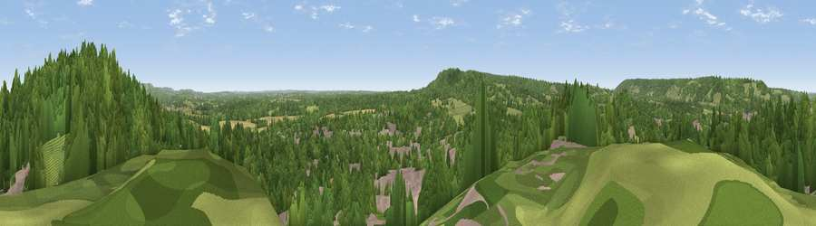

Viewpoint near North Holmwood
#23988 in England · top 23% of its area beats it · near North HolmwoodThe view, rendered

A 360° render of this exact spot computed from the terrain model, tree cover and land cover — summer colours, afternoon light, calibrated against photographs of famous viewpoints. Real trees, hedges and buildings will differ in detail.
The panorama
Grey silhouette: terrain skyline in each direction (720 bearings, Earth curvature and refraction included). Dashed green: skyline with trees (+15 m) and buildings (+8 m) as obstacles. Blue strip: how far the ground is visible on each bearing.
Where the view opens
Wedge length = distance to the farthest visible ground on that bearing (vegetation-aware). Rings at 10, 25 and 50 km.
What fills the view
64% woodland · 17% built-up · 14% grassland · 4% cropland
Angular shares of the visible panorama (visual magnitude), not map area. Landscape diversity 0.43 (0–1 Shannon).
Key numbers
More beautiful places nearby
The staircase of upgrades: each row has a higher view potential than everything closer. Driving times are estimates from straight-line distance, calibrated against real road routing — check an actual route before setting out.
| Place | Direction | Drive | Score |
|---|---|---|---|
| Tower Hill | NE · 0 km | ~1 min | 49.6 |
| Viewpoint near Dorking | NE · 1 km | ~3 min | 51.9 |
| Viewpoint near Dorking | NW · 3 km | ~7 min | 55.9 |
| Viewpoint near Box Hill Village | NE · 4 km | ~9 min | 68.1 |
| Viewpoint near Box Hill Village | NE · 4 km | ~10 min | 71.0 |
| Viewpoint near Coldharbour | SSW · 5 km | ~12 min | 71.3 |
| Viewpoint near Fernhurst | SW · 31 km | ~49 min | 75.1 |
| Wolstonbury Hill | SSE · 36 km | ~55 min | 79.6 |
51.22171, -0.32707 · source: screening · position refined by local search. Computed location — check access rights before visiting.